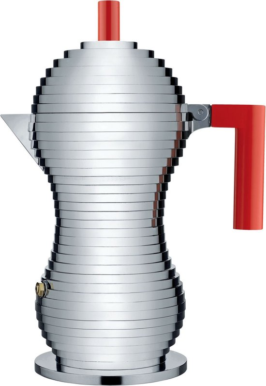

Nos scores
- Design & qualité de construction 4,5/5
- Goût du café 4,5/5
- Facilité d'utilisation 4,5/5
- Entretien 4/5
- Rapport qualité-prix 4/5
Verdict
Une cafetière moka remarquable qui combine technique et design : café moins amer, plein en corps, facile à utiliser et mieux finie que les modèles d'entrée de gamme. Un très bon choix si vous accordez de l'importance autant au goût qu'à l'esthétique, sans aller dans le segment le plus cher.
L'Alessi Pulcina est peut-être la cafetière moka la plus remarquable que l'on puisse poser sur une cuisinière. La silhouette stratifiée de Michele De Lucchi attire immédiatement le regard, mais derrière ce design spectaculaire se cache aussi une idée technique : conçue avec le laboratoire d'illy, la Pulcina est pensée pour stopper l'écoulement juste avant que le café ne devienne amer.
Résultat : un café de style espresso nettement moins amer que beaucoup de cafetières moka classiques, tout en conservant la force et le corps typiques.
Design & qualité de construction
La Pulcina est en aluminium coulé avec un bec en forme de « bec de poussin » (pulcina = petit poussin), conçu pour verser sans gouttes. La poignée et le bouton sont en plastique résistant à la chaleur, généralement rouge ou noir, créant un fort contraste avec le métal.
Il existe différentes versions :
- 1, 3 et 6 tasses (les tasses sont des tasses espresso d'environ 1 oz / 30 ml) ;
- versions aluminium pour gaz/électrique ;
- une variante induction avec fond magnétique et une version double filtre permettant de préparer un café espresso ou un café « américain » plus léger.
La qualité de construction est décrite comme solide et bien finie : corps en aluminium lourd, pièces bien ajustées, poignée robuste. C'est un objet qui paraît encore plus impressionnant en vrai qu'en photo.
Qualité du café : moins amer, corps plein
La grande promesse de la Pulcina est d'arrêter l'extraction au moment optimal, juste avant la sur-extraction. Cela se produit grâce à la forme de la chaudière et à la fluidique interne : l'écoulement s'interrompt naturellement, de sorte que la partie la plus amère n'atteint plus le réservoir supérieur.
En pratique, plusieurs avis le confirment :
- la Pulcina produit un café de style espresso avec un corps corsé, mais nettement moins amer que beaucoup de cafetières moka classiques ;
- le goût est décrit comme plein, riche et « plus proche de la qualité d'un bar à espresso que la plupart des cafetières moka sur plaque » ;
- ceux qui possèdent plusieurs cafetières moka citent explicitement la Pulcina comme leur favorite pour le goût et la consistance.
Il y a cependant un compromis : un peu plus de sédiment dans la tasse peut apparaître. La plupart des testeurs indiquent que c'est négligeable par rapport au goût plus doux et moins amer.
Facilité d'utilisation : rapide, simple et très prévisible
En termes d'utilisation, la Pulcina est très accessible, même pour les débutants. Eau jusqu'en dessous de la valve, café dans le filtre sans tasser, chauffage tranquille jusqu'aux sons typiques, puis couper le feu. Plusieurs testeurs soulignent la constance des résultats : une fois votre mouture et dosage trouvés, vous obtenez presque toujours la même tasse douce et puissante.
Quelques points forts en pratique :
- la cafetière est extrêmement simple à utiliser et à comprendre ;
- le bec verse remarquablement proprement, sans gouttes ;
- la Pulcina chauffe relativement vite et prépare le café plus rapidement que certaines cafetières moka traditionnelles.
En termes de nettoyage, tout est assez simple : lavage à la main recommandé, pas de pièces complexes. La version induction à double filtre a quelques composants supplémentaires, mais offre deux profils (espresso et Americano plus léger).
Durabilité & entretien
Bien que la Pulcina ne soit qu'en aluminium, elle est décrite comme solidement construite. L'aluminium est léger et chauffe rapidement ; avec une utilisation normale, ce type de cafetière dure de nombreuses années. Lavage à la main recommandé, sans produits agressifs ni lave-vaisselle.
Les règles d'entretien classiques s'appliquent : rinçage régulier, élimination des huiles de café, remplacement occasionnel du joint et du filtre. Avec un entretien régulier, la Pulcina reste belle et fonctionnelle à long terme.
En termes de prix, elle est au-dessus des cafetières moka standard, mais bien en dessous d'une vraie machine à espresso. Beaucoup de testeurs trouvent le prix justifié par la combinaison goût, design et facilité d'utilisation.
Pour qui l'Alessi Pulcina est-elle un bon choix ?
La Pulcina vous convient si :
- vous voulez une cafetière moka élégante et remarquable dans votre cuisine ;
- vous aimez le café fort de style espresso, mais êtes sensible à l'amertume et voulez une tasse plus douce ;
- vous ne voulez pas la complexité d'une machine à espresso, mais souhaitez vous en approcher au maximum sur la cuisinière.
Moins adapté si vous :
- préférez le prix le plus bas et que le design vous importe peu ; une Bialetti de base sera moins chère ;
- voulez absolument le moins possible de sédiment dans la tasse ;
- voulez préparer une très grande quantité en une fois : avec 6 tasses espresso au maximum, c'est surtout pour singles, couples ou petites familles.

| Marque | Alessi |
|---|---|
| Modèle | Pulcina |
| Matériau | Aluminium |
| Capacité | 3–6 tasses |
| Source de chaleur | Gaz et plaque électrique (pas compatible induction) |
| Entretien | Lavage à la main à l'eau chaude, pas en lave-vaisselle |